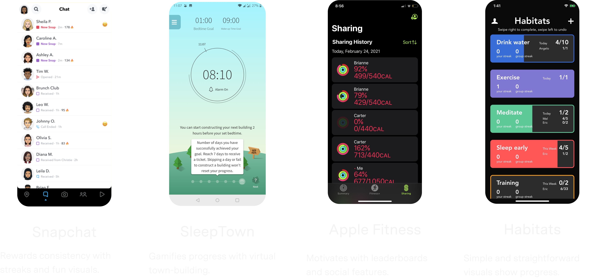
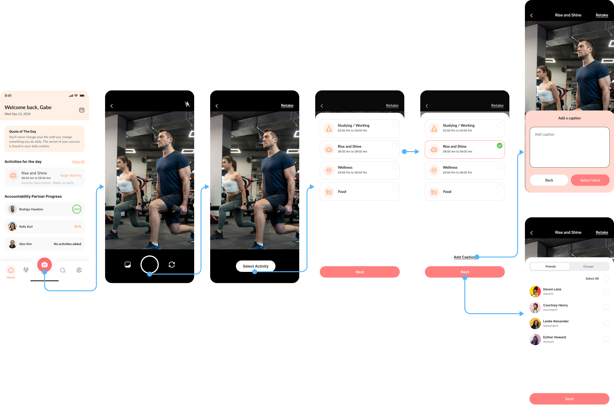
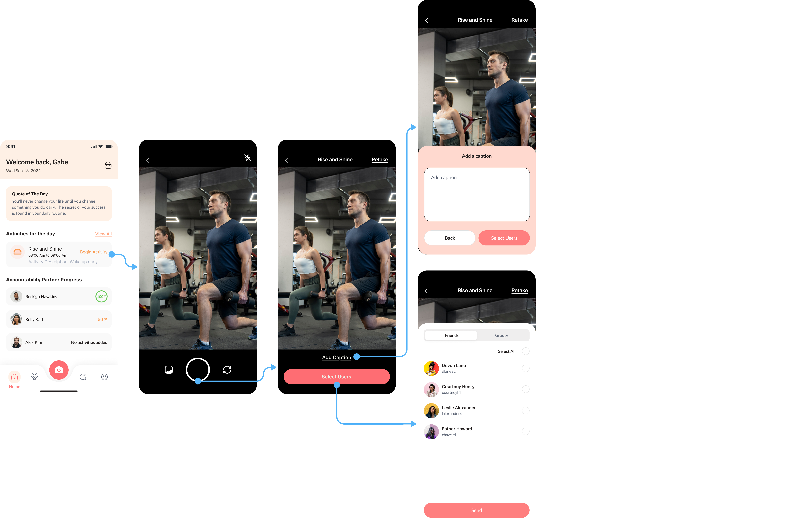
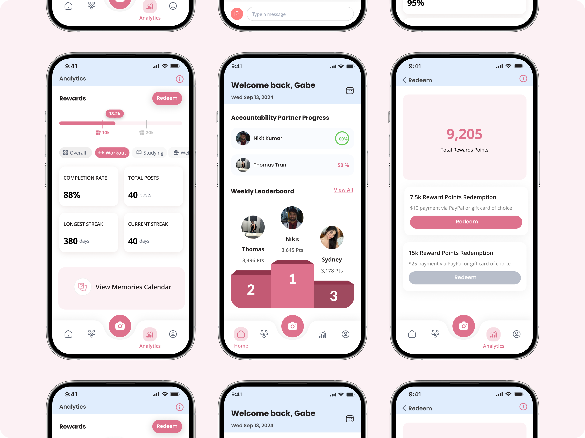
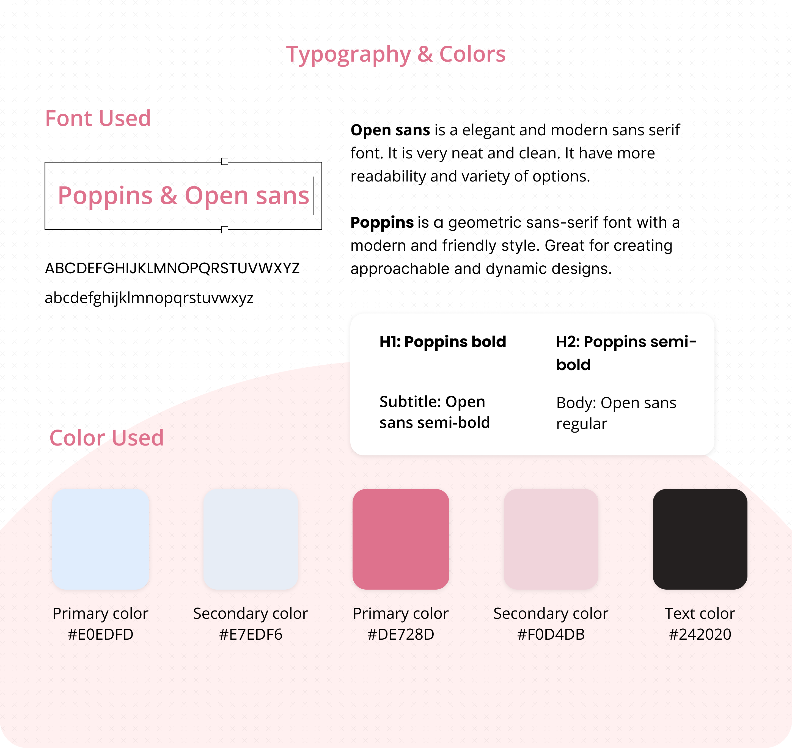

About Impulse
Impulse is a B2C social accountability app designed for young professionals who want to build healthier habits together.
As a Product Designer at Impulse, I joined during its beta phase, right when the team noticed a critical problem: many users loved the idea of the app but quickly stopped using it.
Simplified the primary logging flow, introduced smart notifications, and established a consistent visual brand system.
The Problem
After four weeks, 69% of users dropped off
Week 1
Users are motivated and excited about setting new goals.
Week 2.5
Users or their partners start skipping updates, often due to forgetting or losing interest.
Week 4
Users abandon the app entirely.
Research & Discovery
Since Impulse is a B2C app, even small frustrations can cause users to stop using it. To understand the drop-off, I combined three research approaches:
Step 1: Listening to users (12 interviews, 5 usability tests)
I conducted 12 interviews and 5 usability tests with both new and returning users. These sessions revealed some of their struggles:
Goal logging was tedious
8-step flow took 45s, too long for daily use.

Frequent misclicks
Unclear layout led to 80% tapping the wrong buttons.

Users forgot the app
Hard to build habits without reminders.

Uninspiring design
Submit as many design requests as you need, one at a time.

Step 2: Learning from the market
After spotting our internal issues, I turned to competitor analysis. I studied how other successful habit tracking apps tackled similar problems:

- How they structured their habit flows
- How they motivated users with nudges and streaks
- How they balanced flexibility and simplicity
Step 3: Observing real behavior
I watched both new and long-term users interact with the app without guidance. This helped me:
- Spot moments of hesitation or drop-off
- Notice which features they returned to (or ignored)
- Understand what motivated consistent use
This step was key in translating research into flows and features that fit real-world habits.
Design goals
Based on what I learned from user feedback, competitor insights, and behavioral patterns, I set three clear design goals to guide the redesign.
Simplify the goal logging flow
Support users with reminders
Build a design system
Designing for Real Habits
Change 1: Streamlining goal logging
The original logging process took over 23 seconds and frustrated users. I redesigned it to support two natural mental models:
Camera-first flow
Others captured evidence first (a photo or video), then tied it to a goal

Goal-first flow
Some started with a goal in mind, then logged it

Change 2: Smart, supportive reminders
Users often forgot to log habits but they didn’t want generic or nagging push notifications.
So I designed a system that felt supportive instead of stressful:
- Custom reminder schedules
- Positive, friendly tone
- Smart timing based on user behavior (e.g., when they’re likely to skip)

Change 3: A new visual language for energy & consistency
When I joined, there was no design system, which led to inconsistent styles and developer frustration. My design system improvements included:
- Refined color palette for energy & motivation
- Scalable UI components for faster dev handoff
- Consistent visual language across pages

What I learned from designing for real-life habits
Small changes can drive big behavior shifts. In habit-tracking apps, success doesn’t always come from flashy features, it comes from respecting users’ time, energy, and attention span.
- Treat every interaction as a chance to reduce friction
- Design flows that adapt to real human behavior, not just ideal scenarios
- Balance simplicity with flexibility
- Help users feel progress (not pressure)